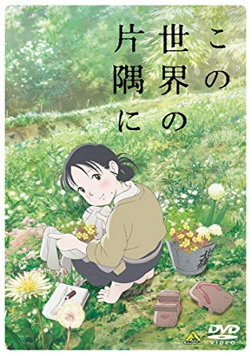

この世界の片隅に
作品情報
/
監督: 片渕須直
原作: こうの史代
出演: 北條すず(のん)
黒村径子(尾身美詞)
北條周作(細谷佳正)
あらすじ
昭和19年、18歳の少女・すず（声：のん）は生まれ故郷の広島市江波を離れ、日本一の軍港のある街・呉に嫁いできた。戦争が進み様々な物が不足していく中、すずは工夫をこらして食事を作っていく。やがて日本海軍の根拠地であるため呉は何度も空襲に遭い、いつも庭先から眺めていた軍艦が燃え、街は破壊され灰燼に帰していく。すずが大切に思っていた身近なものたちが奪われていくが、日々の営みは続く。そして昭和20年の夏を迎え……。
各部員によるレビュー及び短評
| ぽこすけ | 80点 | |
|---|---|---|
| ねこねこ | 点 | |
| あおい | 点 |